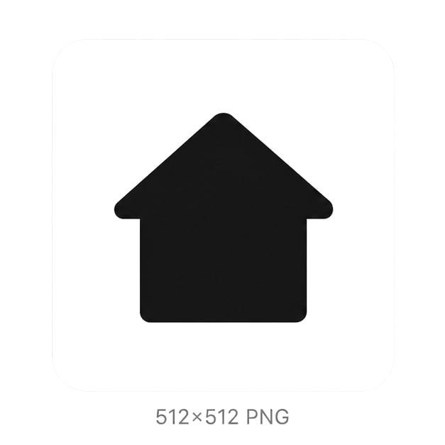
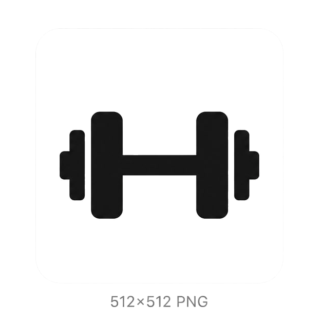
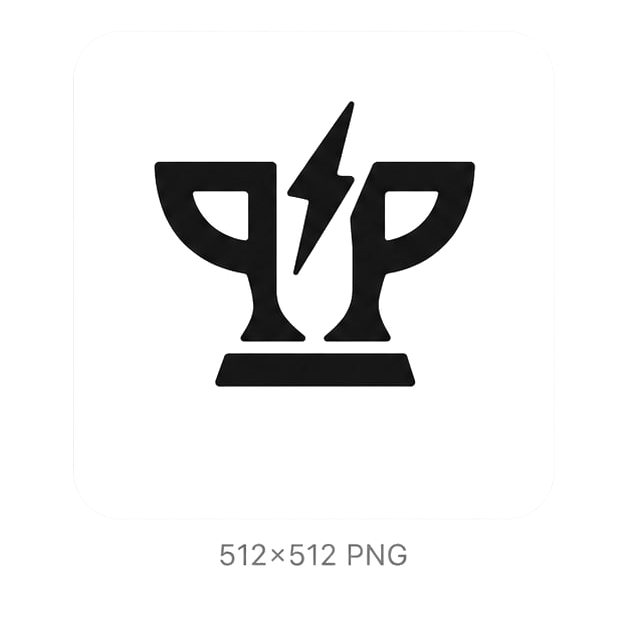
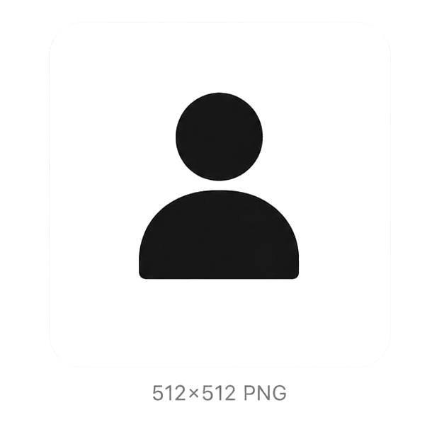

PPOLO / DESIGN DOCUMENT
PPOLO의 디자인은 *넷플릭스처럼 강한 레드/블랙 대비*를 기본으로 하고, 텍스트는 *화이트 중심*으로 정리합니다. 전체 인상은 다크하고 시네마틱하게 유지하되, 핵심 정보와 행동 버튼은 한눈에 읽히도록 설계합니다.
1. 디자인 방향
이 문서는 보기 좋은 포스터가 아니라, 실제 앱을 만들 때 흔들리지 않도록 기준을 정리한 문서입니다. 홈, 기록, 경기, 결과 화면이 모두 같은 세계관에 있지만, 각 화면의 역할은 분명히 달라야 합니다.
레드와 블랙만으로도 충분히 강한 인상을 만든다.
배경은 완전한 블랙에 가깝게 두고, 카드와 패널은 한 톤만 밝게 구분한다. 장식성 그라데이션은 줄이고, 정보 계층은 텍스트 크기와 여백으로 만든다.
화면마다 가장 먼저 읽혀야 하는 정보만 상단에 둔다.
현재 상태, 빠른 시작, 최근 기록, 공지처럼 사용자가 바로 행동할 요소를 앞에 둔다.
리스트와 상세를 분리하고, 입력/수정은 강한 버튼 한두 개만 남긴다.
랭킹, 남은 시간, 내 상태를 크게 보여주고 나머지는 보조 정보로 낮춘다.
각 컴포넌트의 목적, 형태, 상태를 짧고 명확하게 적는다.
가장 중요한 행동 1개만 담당한다. 배경은 레드, 텍스트는 화이트, 라벨은 짧게 유지한다.
보조 행동을 위한 버튼이다. 표면은 다크, 경계선은 얇게, 레드 사용은 최소화한다.
상태를 먼저 읽히게 한다. 텍스트가 우선이고 색은 보조 신호 역할만 맡는다.
브랜드 자산은 장식이 아니라 식별 장치로 다룬다.
앱 아이콘은 로고 단독으로, 모바일 헤더는 로고 + PPOLO로 사용한다.
하단 탭바 홈 진입 아이콘

하단 탭바 기록 진입 아이콘

하단 탭바 경기 진입 아이콘

하단 탭바 마이 진입 아이콘

움직임은 적게, 변화는 분명하게.
이 문서는 멋보다 적용 가능성이 먼저다.